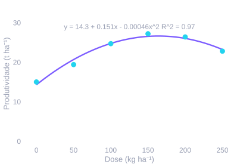
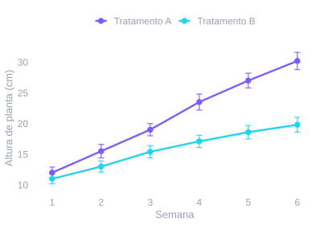

Plota: gráficos prontos para publicar
Barras, linhas, interação, regressão, boxplot e mais, com fonte, cor e tamanho sob medida. Agrupe em painéis e baixe na resolução que a revista pede, sem escrever código.
Qual gráfico para qual pergunta
O Plota tem dez tipos de gráfico. A escolha começa pelo que você quer mostrar, não pelo que fica mais bonito:
| Você quer mostrar… | Tipo no Plota |
|---|---|
| Médias de tratamentos qualitativos (cultivares, produtos), com erro e letras do teste | Barras, Barras horizontais ou Médias e erro |
| Interação entre dois fatores | Linhas ou Barras, com o segundo fator em Cor (grupo) |
| Resposta a doses (fator quantitativo) | Dispersão e regressão: linear, quadrática, cúbica, logarítmica ou LOESS |
| Evolução no tempo (dias após a semeadura, avaliações) | Linhas |
| Composição de um total (frações, classes) | Empilhadas, em valores ou em 100% |
| Como os dados se distribuem, e não só a média | Boxplot, Violino, Histograma ou Densidade |
Doses são números, e o gráfico certo para elas é uma curva, não barras com letras. O porquê está em Tukey ou regressão?

Passo a passo
Aba 1 · Dados
Cole as células do Excel (com a linha de títulos), envie um arquivo .xlsx, .xls ou
.csv, ou carregue um dos exemplos: Cultivares × doses de N (quatro cultivares, cinco doses
e quatro blocos, com produtividade, °Brix e uma coluna de letras) ou Crescimento ao longo do ciclo
(massa seca e índice de área foliar de 15 a 90 dias, irrigado × sequeiro). Você pode ter vários conjuntos de
dados na mesma sessão e editar qualquer valor na própria planilha do app. Vírgula decimal é aceita.
Os dados entram no formato longo: uma linha por observação, uma coluna por informação. Se precisar reorganizar, veja Como organizar a planilha antes de analisar.
Aba 2 · Gráficos
- Novo cria um gráfico. Escolha o Tipo de gráfico.
- Em Dados e variáveis, diga o que vai no Eixo X (tratamentos ou doses), no Eixo Y (variável resposta), em Cor (grupo / 2º fator) e, se quiser, em Dividir em painéis por um terceiro fator.
- Em Estatística e rótulos, escolha o resumo (média, mediana ou soma), a barra de erro (erro-padrão, desvio-padrão ou IC 95%), os rótulos (letras de uma coluna ou o valor da média) e, na dispersão, o modelo de regressão.
- Ajuste Cores e formas, Textos e fonte e Eixos, legenda e tema.
- Precisa do mesmo gráfico para outra variável? Duplicar e troque só o eixo Y. O botão Estilo em todos iguala fonte, cores, tema e tamanhos de todos os gráficos.
Aba 3 · Painel
Escolha dois ou mais gráficos, o número de colunas, a identificação (A, B, C ou (a), (b), (c)…) e, se as legendas forem iguais, junte-as numa só, abaixo, acima ou à direita. O painel é baixado como uma figura única.
.plota no seu computador. Na próxima
vez, Abrir projeto traz tudo de volta para continuar de onde parou. O app não guarda nada: ao fechar
a página sem salvar, o trabalho se perde.
Detalhes que as revistas cobram
Unidades com expoente e índice
Escreva kg ha^-1, m^2 ou CO_2 em títulos, nomes de colunas e níveis, e o
gráfico mostra kg ha−1, m2 e CO2. Para mais de um caractere, use chaves:
x^{0,5}. Nada de "kg/ha" improvisado no eixo.
Letras do teste de médias
O Plota não faz o teste: ele desenha as letras que você já tem. Inclua na planilha uma coluna com as letras (vindas do Ranova ou de outro programa) e escolha Rótulos → Letras de uma coluna. Assim, o gráfico sempre concorda com a tabela do artigo.
Tamanho, formato e resolução
Há tamanhos prontos (artigo em 1, 1,5 ou 2 colunas, página A4, slide 16:9, Full HD) ou qualquer tamanho em cm, mm, polegadas ou pixels. Os formatos são TIFF (com compressão LZW, o mais pedido pelas revistas), PNG, JPEG, PDF, SVG e EPS, de 72 a 2400 dpi. A maioria das revistas pede TIFF ou PNG a 300–600 dpi, ou PDF/EPS vetorial; confira as instruções aos autores.
A prévia é desenhada no mesmo tamanho da exportação, então o que você vê é o que vai baixar: a fonte de 10 pt na tela é a fonte de 10 pt no arquivo. Isso evita o problema clássico do gráfico que fica lindo na tela e com letras minúsculas quando reduzido para uma coluna.
Cor e impressão
Há paletas prontas, incluindo tons de cinza (para versão impressa) e Okabe-Ito, que continua distinguível para pessoas com daltonismo. Para reforçar a diferença entre grupos sem depender da cor, ative formas e tracejados diferentes por grupo.

Dúvidas comuns
Erro-padrão, desvio-padrão ou intervalo de confiança?
O desvio-padrão descreve a variação dos dados; o erro-padrão, a precisão da média; o IC 95% dá a faixa provável da média verdadeira. Para comparar médias de tratamentos, o erro-padrão é o mais usado. O importante é dizer na legenda da figura qual foi usado.
As fontes saem iguais em qualquer computador?
Sim. O Plota usa fontes livres (Liberation Sans, com as medidas do Arial; Liberation Serif, com as do Times New Roman; PT Sans; Poppins e Crimson Text) embutidas no app. Nos formatos vetoriais, o texto sai convertido em curvas, então o arquivo abre igual em qualquer lugar.
Prefiro fazer no R
O Plota é feito com ggplot2 e o código é aberto (licença MIT) no
GitHub. Para começar a
programar seus próprios gráficos, veja R para pesquisa.